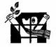

پذيرش > همراهان > نامه های شما > نقش زن در مسئولیتهای مهم جامعه ایران
 تبعیض تبعیض

 نقش زن در مسئولیتهای مهم جامعه ایران نقش زن در مسئولیتهای مهم جامعه ایران
28 اسفند 1387 - ندا رستم پور - نسخه قابل چاپ
نامه ها
ایران در حال طی کردن مرحله سنتی است ولی هنوز بسیاری از آثار و الگوها و ساختار و مناسبات سنتی قدیم در زوایای مختلف و اعماق این جامعه به قوت خود باقی مانده اند و در برابر تغییر و توسعه مقاومت میکنند. نمونه ای از این مقاومت را میتوان در آن بخش از هنجارهای اقتصادی و کدهای فرهنگی و نگرشها و ساختارهای ثروت و قدرت دید که عملا وضعیتی از عدم تعادل جنسیتی در بازارکار نیروی انسانی، حتی در سطح نیروهای انسانی متخصص، به وجود آورده است.
طبق تعریف، هنگامی می گوییم عمل تبعیض آمیزی صورت گرفته که شخص حاضر باشد برای اعمال سلیقه شخصی خود، مبلغی را بپردازد یا از درآمدی صرف نظر کند. اعمال تبعیض بر گروهی از انسانها عملی غیر اخلاقی و در بسیاری از جوامع، عملی غیر قانونی است. وجود تبعیض در بازارکار می تواند در دراز مدت به هدر رفتن نیروی انسانی زیادی منجر شود.
علاوه براین، جداسازی جنسیتی مشاغل برای زنان عاملی تعیین کننده و سرنوشت ساز است زیرا این جداسازی یر نگرش مردان نسبت به زنان و زنان نسبت به خودشان اثر منفی دارد. همچنین بر موقعیت و درآمد زنان و در نتیجه بر بسیاری از متغییرهای اجتماعی همچون مرگ ومیر و بیماری، و فقر و نابرابری در آمدی اثر منفی می¬گذارد. تداوم این دیدگاههای جنسیتی بر تعلیم و تربیت و آموزش زنان نیز اثر منفی دارد وجود عاملی است که سبب می شود نابرابریهای جنسیتی به نسلهای بعد تسری یابد .
تفکیک مشاغل براساس جنسیت به نابرابریها، ناکارآیها و عدالت اجتماعی دامن میزند. اگر سیاستگذاران به برابری، کارآیی و عدالت اجتماعی معتقد باشند. باید به این پدیده بازارکار توجه بیشتری داشته باشند.
علل تبعیضهای جنسیتی
در زمینه تقسیم کار، وجود نوعی مرز بندی طبیعی بین کار خانگی زنان و مردان بیرون از خانه، مساله تعدد نقش زنان بطوری که انتشار انجام مسولیتهای متفاوت زنان در قالب همسر و به عنوان مادر و در نقش خانه دار و شاغل آنها را دچار تنش و نوعی تضادتنش و فشارهای روانی از آن می کند. نا امنی اجتماعی امکان حضور فعال زنان را در جامعه که لازمه اش سفرهای بین شهری، اقامت در هتل، با مشکل مواجه کرده است.
برخی از شرایط اجتماعی حاکم در سه دهه اخیر و بعضی از تصمیم گیریهای عجولانه سالهای اول انقلاب بیشترین لطمه را بر مشارکت زنان وارد کرده است که تعطیلی مهدکودکهای دولتی و مراکز تنظیم خانواده، بازنشستگی زودرس زنان، تعریف شغلهای مشابه نقش مادری از آن جمله است.
در بخش فعالیتهای روستایی، زنان نیز کماکان با برخی از این مشکلات روبرو هستند
کار زنان روستایی ، برای مردان فرصت مهاجرت به شهرها و انجام کارهای یدی با
دستمزد را فراهم آورده است؛ در اغلب سرشماریها، تنها کارهایی که زنان در مقابل آن مزد دریافت نمی¬کنند به عنوان زنان خانه¬دار طبقه¬بندی میگردند.
مشارکت زنان در کارهای متعدد فرعی از جمله صنایع دستی، تولید برای مصرف خانواده،نگهداری از حیوانات، کارهای فصلی مثل مبارزه با آفات حشرات، تهیه آب و سوخت، چیدن میوه، شیردوشی، بافندگی وقالیبافی، آنان را در گروه غیرفعال اقتصادی قرار داده است.
تبعیضهای فرهنگی
مردسالار همواره رواج دهنده باورها سنتی و کلیشه¬ای جنسیتی بوده است از ابتدا تربیت و جامعه¬پذیری زنان طوری است که آنان را فاقد اعتماد به نفس و تصمیم¬گیری برای رقابت با مردان در فعالیتهای اجتماعی، در نظر گرفتن خویش به عنوان جنس دوم، خود کم¬بینی تواناییهایی خویش، قرار داده است.
کمبود آگاهی زنان در ابعاد حقوقی فردی، خانوادگی ، اجتماعی ، حرفه¬ای و عدم شرکت در تشکل¬های صنفی و فعالیتهای اجتماعی، فرهنگی و سیاسی به استمرار این ساخت نابرابر کمک می¬کند. به دلیل نگاه جنسیتی، فرصتهای اجتماعی و شغلی همواره به طور نابرابر و بدون توجه به شایستگی افراد، اعطا گشته است و از این رو همواره شاهد تبعیض جنسیتی در اشتغال هستیم.
تبعیضهای حقوقی
جدیترین ماده مربوط به زنان در برنامه سوم، یعنی ماده 158 ، به جای توسعه نهادی و تحول ساختاری، صرفا بر« تقویت خانواده» تاکید کرده است، در حالی که نقش سنتی زن و مرد در خانواده یکی از مهم¬ترین موانع توسعه مشارکت زنان است و صرف تقویت خانواده و در صورت تداوم این نقش سنتی گرهی از کار فرو بسته زنان نمی گشاید.
همچنین یکی از مواد قانون مدنی تصریح دارد که رئیس خانواده مرد است و در صورتی که اشتغال زن را به صلاح خانواده نداند، می¬تواند مانع آن شود.
دوم، محدودیتها و نا برابریها موجود در نظام حقوقی کشور به زیان زنان است و مانع تحقق بسیاری از پیش شرطها و زمینه¬های لازم مشارکت اقتصادی زنان، حتی زنان دارای تحصیلات عالی می¬شود «مانند حق زن، استقلال در خروجی قانونی از کشور، قانون کار یا قانون تامین اجتماعی»
زنان به عنوان نیمی از جمعیت، تاثیر مستقیمی و پیشرفت و توسعه جامعه دارند استراتژیهای یک جامعه توسعه یافته باید بر مبنای مشارکت هر چه فعالتر زنان در امور اقتصادی، سیاسی و اجتماعی طراحی و تدوین شود که مستلزم آن است تغییری در نگرش و باورهای فرهنگی نسبت به نقش زن در جامعه از طریق رسانه¬های جمعی، تولید آموزشی مناسب وریشه کن کردن تعصبات منفی نسبت به ترقی زنان و در نهایت ایجاد فرصتهای شغل برابر و فضای اعتماد و اطمینان برای زنان در این زمینه در ایران بوجود آید
ندا رستم پور
ارسال به
بالاترین
،
توییتر
،
فریندفید
،
فیسبوک
در همين بخش :
 پیشکش "ندا"های کشورم /خانم دکتر،چند دقيقه وقت داريد؟ / خليل طالقانی پیشکش "ندا"های کشورم /خانم دکتر،چند دقيقه وقت داريد؟ / خليل طالقانی
براي سه سال سخت كمپين، براي ما
برای دادخواهی از ظلمی که بر فرزندانمان می رود چه می توانیم بکنیم؟
زنان زابل در چنگ خرافات و خشونت
سه شنبه سبز من
ديگر بخش ها :
طرح یک میلیون امضا
|
مقالات
|
سایت نوشته ها
|
اخبار
|
گزارش كمپين
|
گفت و گو
|
علیه سکوت
|
كوچه به كوچه
|
نامه های شما
|
گزارش ویژه
|
گفتگو با اعضا
|
ویژه سالگرد کمپین
|
تصویر برابری
|
دل آرام علی
|
تریبون
|
مقالات
|
تاریخ شفاهی
|
خارج از چارچوب
|
کتابخانه
|
درباره کمپین
|
کمپین در شهرها
|
کمپین در بند
|
صدای تغییر
|
ویژه 22 خرداد
|
لایحه حمایت از خانواده
|
گالری
|
عشا مومنی
|
امیر یعقوبعلی
|
خدیجه مقدم
|
راحله عسگری زاده و نسیم خسروی
|
پروین اردلان،جلوه جواهری، مریم حسین خواه، ناهید کشاورز
|
زینب پیغمبرزاده
|
سعیده امین، سارا ایمانیان، محبوبه حسین زاده، ناهید کشاورز و همایون نامی
|
احترام شادفر
|
نسیم سرابندی زاده،فاطمه دهدشتی
|
وبلاگ مهمان
|
پرونده خرم آباد
|
دستگیری ها
|
مریم مالک
|
پرستو اللهیاری
|
مهرنوش اعتمادی
|
سمیه رشیدی
|
Other Languages
|
همراهان
|
«فراخوان کمپین ده روز با بهاره هدایت»
| English
|